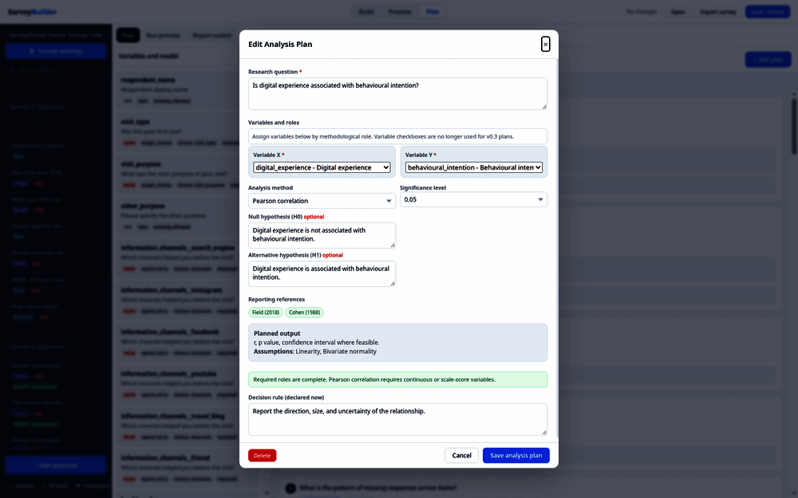
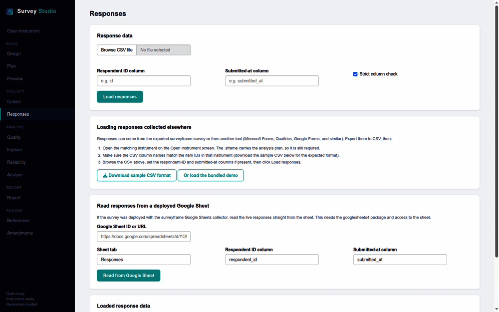
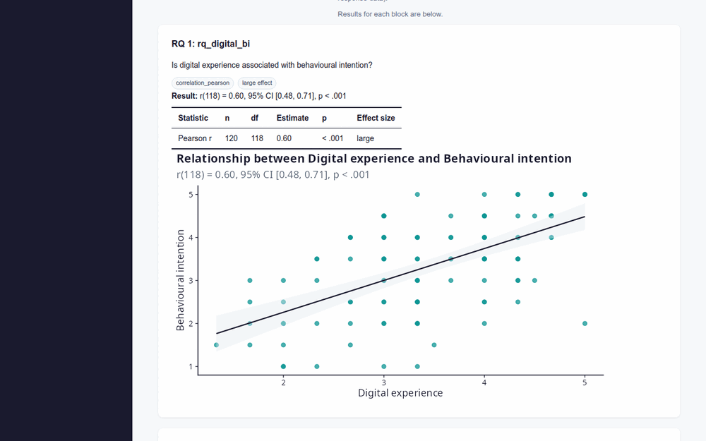
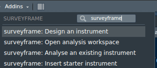
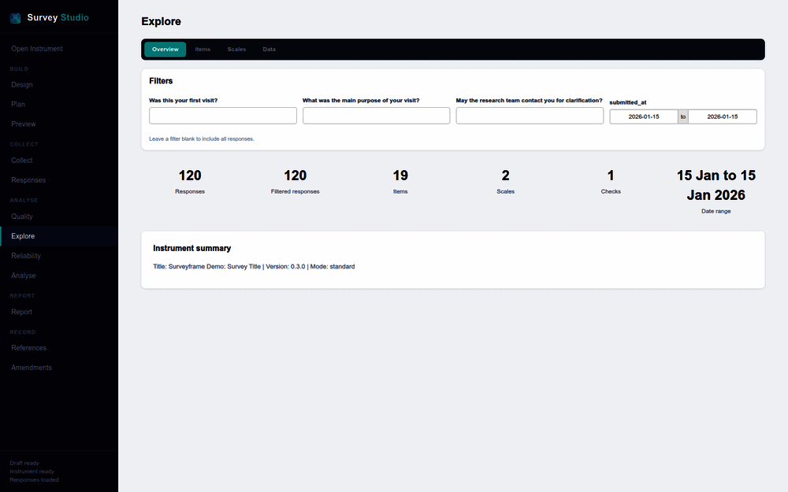

The visual workflow: SurveyBuilder, SurveyStudio, and the dashboard
Source:vignettes/surveybuilder-gui-overview.Rmd
surveybuilder-gui-overview.Rmdsurveyframe has three graphical entry points, kept
separate on purpose, each mapping onto a part of the research-design
workflow.
-
launch_builder()opens SurveyBuilder, a standalone questionnaire builder. It runs in the browser, saves.sframefiles, and authors the analysis plan and the model. It does not compute statistics. -
launch_studio()opens SurveyStudio, the workflow hub. With R behind it, it opens a designed instrument, previews it exactly as deployed, uploads responses, runs quality and reliability checks, runs the analysis plan, and exports the report, the deployable survey, and the Sheets collector. Survey design itself stays in the SurveyBuilder. -
launch_studio(screen = "dashboard")opens the Explore screen, a response explorer with filters, for an instrument and response data that already exist.
Input-types demo
The input-types demo covers the main controls available in
SurveyBuilder and SurveyStudio. The two decision item types,
pairwise_comparison and criteria_weight, sit
outside this demo. They get their own worked example in the MCDM
vignette, because they only make sense alongside a declared decision
method and a set of alternatives.
demo <- sframe_demo("input_types")
instr <- demo$instrument
responses <- demo$responses
table(vapply(instr$items, function(x) x$type, character(1)))
#>
#> date likert matrix multiple_choice numeric
#> 1 5 1 1 1
#> ranking rating section_break single_choice slider
#> 1 1 3 4 1
#> text text_block textarea
#> 2 1 1
dim(responses)
#> [1] 120 22SurveyBuilder: the Plan mode
SurveyBuilder runs entirely in the browser, so it is an authoring tool. Its Plan mode has three tabs, Plan, Declared analyses and Expected outputs, with a three-panel layout underneath: a list of variables and constructs on the left, the analysis plans in the middle, and an output preview with the model builder on the right.
The Plan tab is where the research design is written. The “+ Add plan” button opens a form that records the research question, the family and method, the significance level, the variables that fill each role, and the decision rule. The form offers only the role set a method needs and reads the measurement level of each variable, so a saved plan is coherent.

The Declared analyses tab lists the plans that need data, and
Expected outputs sketches the report they will fill. Neither computes
anything. SurveyBuilder stores each plan with an empty result, because
the browser cannot run R. The statistics are produced later, either in
an R session with run_analysis_plan() or in SurveyStudio.
The output preview on the right shows counts, such as the number of
plans, the number of data-dependent run items, and the number of saved
models.
The model builder, also on the right, creates constructs from the
scales and adds structural paths. The .sframe stores that
model specification, and surveyframe can generate lavaan or seminr
syntax from it. The Google Sheet panel does not collect data on its own.
It explains that, after saving the .sframe file, you run
export_google_sheet(instr, sheet_url = "...") in R to
generate the Apps Script collector.
SurveyStudio: the screens
SurveyStudio is a Shiny application, so it can run R. Its left navigation follows the study. Open Instrument comes first, then 5 groups: Build (Design, Plan and Preview), Collect (Collect and Responses), Analyse (Quality, Explore, Reliability and Analyse), Report, and Record (References and Amendments). Design holds the SurveyBuilder, and Plan opens it in its Plan mode.

Every change Studio records as an amendment goes through 1 dialog. It
shows the scales, models and plan blocks the change touches, suggests
the next version and says why (a design amendment moves the minor
number, a pipeline amendment the patch number), then records it with
amend_sframe() or cancels. Studio opens it from 5 places: a
save from Design of an instrument with a history, a revised
.sframe imported on the Amendments screen, “Drop from
scale” under a result that flags an item, “Put back” for an item dropped
in the session, and “Record as amendment” on Quality and Responses after
removing bots or correcting data. Put back is a second amendment, so the
history keeps both. The Amendments screen lists that history oldest
first, with the date, tier, reason, what changed and the content hashes
before and after, and the status line gives the version and the count,
such as “1.1.0, 2 amendments”. Exporting the amended instrument keeps
the log inside the .sframe file, readable later with
sframe_get_amendments().
The same amendment in a script
The script route takes the same steps: read the instrument, find the flagged items, drop one, record the drop, write the file, run the plan again and report.
d <- sframe_demo("factor_structure")
results <- run_analysis_plan(d$responses, d$instrument)
flags <- sframe_item_flags(results[[2]])
flags[, c("item", "reason")]
#> item reason
#> 1 con_4 con_4: loading .39 in RQ2, below .40
revised <- sframe_drop_items(d$instrument, "con_4", from = "content")
#> Dropped con_4 from scale content, plan block RQ1, plan block RQ2. The questions
#> and their answers stay. Record it with amend_sframe().
amended <- amend_sframe(d$instrument, revised,
reason_code = "model_respecification",
reason_text = flags$reason[1], tier = "design",
deviation_report = "con_4 dropped from content after the EFA flagged it.",
version = "1.1.0")
sframe_get_amendments(amended)[, c("tier", "reason_text", "changed_fields")]
#> tier reason_text
#> 1 design con_4: loading .39 in RQ2, below .40
#> changed_fields
#> 1 version, meta, items, scales, analysis_plan
path <- tempfile(fileext = ".sframe")
write_sframe(amended, path)
rerun <- run_analysis_plan(d$responses, read_sframe(path))render_report(read_sframe(path), d$responses) then
writes the report, whose Reproducibility block gives the version and the
amendment list.
The References screen lists the works the instrument cites and adds
more from pasted BibTeX, each with where the instrument cites it. Citing
a source needs no amendment, and the references travel in the exported
.sframe file. It is the only place a source is added: on
the Report screen, type @ in an interpretation to cite one of them, and
“Manage references” leads back here, so a report never cites a source
the .sframe file does not record. A reference can be cited
by a plan block’s hypotheses or by the study once they are written.
The Preview screen renders the exact deployable survey, identical to the exported HTML.
The Analyse screen runs the declared plan. It shows the plan
read-only, with each block’s method, variables, declared hypotheses and,
for a cross-tab, the percentages, and “Change plan” opens Plan, the only
plan editor. When response data have been loaded, it calls
run_analysis_plan() and shows a card for each research
question: the APA result, the effect size, a formatted table and the
chart, across the width of the screen. A plan changed once responses are
loaded is a design amendment, so the save opens the amendment dialog
with the changed blocks in the deviation report.

The Report screen produces the written report through
render_report(), in 4 tabs: Interpret (read each result and
write what it means), Configure (the report’s options, including the
reference style), Export report and Reproduce. A choice made in 1 tab
stays when you switch to another, and “Download copy” beside the title
saves the .sframe file. Its options include the codebook,
quality, missing data, descriptives, reliability, the saved
analysis-plan results, and the model appendices. The per-question report
produced by render_results() in an R session is a separate
route to a written report and is covered in the main vignette. The
screen makes 2 products. Export report writes the finished report, in
HTML or PDF, and in Word or OpenDocument when Quarto is found. Reproduce
writes the reproducible source: a zipped folder holding
report.qmd, the .sframe file, the responses,
the references and a manifest, from
render_report(format = "qmd"). Open report.qmd
in RStudio or Positron and render it, and it recomputes every number and
checks it.
Recommended workflow
- Use
launch_builder()to create or revise the questionnaire, the plan, and the model. - Save the instrument as a
.sframefile. - Use
read_sframe()to load the saved instrument in R. - Use
read_responses()to import collected data. - Use
launch_studio()to inspect the instrument and responses together, to run the plan on the Analyse screen, and to write the report on Report. - Use
launch_studio(screen = "dashboard")for response exploration with filters.
RStudio Addins
In RStudio, the same tools open from the Addins menu in the toolbar. The 4 commands are listed under surveyframe: and are searchable by that prefix in the command palette. Each one needs the rstudioapi package.

| Command | What opens | What it needs |
|---|---|---|
| surveyframe: Design an instrument | SurveyBuilder in the browser | RStudio alone |
| surveyframe: Open analysis workspace | SurveyStudio, on Open Instrument | RStudio alone, open a .sframe there |
| surveyframe: Analyse an existing instrument | SurveyStudio, on Responses, with the instrument loaded | a .sframe file, chosen in a dialog |
| surveyframe: Insert starter instrument | a template in the active R script, at the cursor | an open R script |
The commands follow the workflow above:
Design an instrument -> save .sframe -> Analyse an existing instrument ->
upload responses -> run the plan -> export the reportThe starter instrument holds a 5-point choice set, 3 items, one
scale, and a reliability plan, and it validates as inserted. It ends
with a commented write_sframe() line for saving it. When a
command has to stop, because RStudio is closed, the console has focus,
or a file fails to load, it prints one message saying why and what to do
next.
Demo launchers
This vignette leaves the demo launchers unevaluated, because CRAN examples and vignettes leave browsers closed.
launch_builder(demo = "input_types")
launch_studio(demo = "input_types", screen = "preview")
launch_studio(demo = "input_types", screen = "dashboard")launch_builder(demo = "input_types") injects the demo
state into a temporary copy of survey_builder.html and
opens it, so the demo questions, scales, and analysis plan are visible
at once.
launch_studio(demo = "input_types", screen = "preview")
opens the studio with an instrument and response data already loaded.
Any name from sframe_list_demos() works as
demo. Setting screen = "dashboard" opens the
Explore screen with the same demo data.
Standalone builder
builder_file <- launch_builder(open = FALSE)
builder_fileUse SurveyBuilder for questionnaire, plan, and model authoring. Response exploration and plan execution belong in SurveyStudio.
Studio workflow hub
launch_studio(
instrument = instr,
responses = responses,
screen = "analysis",
launch.browser = FALSE
)SurveyStudio reads the objects passed by
launch_studio(). With response data present,
screen = "auto" opens Explore. With an instrument alone it
opens Preview, and with neither it opens Open Instrument.
screen = "analysis" opens the Analyse screen
explicitly.
Explore
launch_studio(
instrument = instr,
responses = responses,
screen = "dashboard",
launch.browser = FALSE
)Use the Explore screen after data collection to explore responses.
Each filter takes the question’s label and choice labels, and the date
range follows submitted_at.

Known limitations
SurveyBuilder stores short autosave recovery data in browser
localStorage. Browsers can clear that storage when site
data are cleared, when private browsing is used, or when a storage quota
is reached. Save a .sframe file before closing the browser
when the work matters.
SurveyBuilder first tries the browser crypto.subtle API
for SHA-256 hashing and then uses the bundled JavaScript fallback. This
supports browsers that restrict crypto.subtle on local
file:// pages.
Moving files between tools
The .sframe file is the shared object between the visual
tools and the R workflow. It carries the questions, the analysis plan,
and the model in one file.
- Build or edit the questionnaire, plan, and model in SurveyBuilder.
- Save the
.sframefile. - Load it in R with
read_sframe(). - Import responses with
read_responses(). - Use SurveyStudio or the dashboard for response checking and reporting.